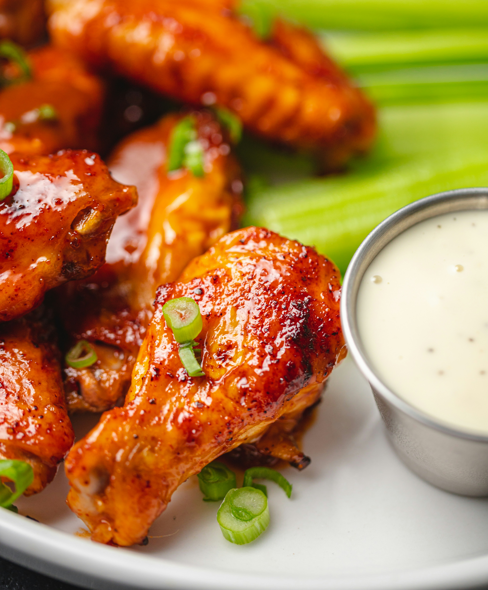

Chicken wings are savory, juicy pieces of meat that become irresistibly flavorful when seasoned, marinated, or coated in a sauce before cooking. Whether baked, fried, or grilled, the skin turns crispy and golden while the inside stays tender and moist, creating a satisfying contrast in every bite. They can be tossed in anything from tangy buffalo sauce to sweet barbecue glaze or spicy dry rub, making them endlessly customizable. Served hot, chicken wings deliver a bold, comforting taste that fits perfectly as a snack, appetizer, or full meal.